Effect of degradation on schroeder structure
Fine scale acoustic perception in zebra finches
Source code and data found at https://github.com/maRce10/acoustic-fine-features-zebra-finch
1 Purpose
- Evaluate if schroeder structure is degraded during transmission
- Evaluate degradation as a function of signal-to-noise ratio
2 Data analysis workflow
flowchart LR I[Raw Schroeder\nrecordings] --> J(Aritfically\nDecrease SNR) J --> C A[Playback\nexperiment\nrecordings] --> B(Automatic\n\nannotation) B --> C(Find\nSchroderder\nperiodicity) C --> D(Detecting\nperiods\nwith\nautocorrelation) D --> E(Calculate\naverage\nSchroeder) E --> F(DTW\nSchroeder\nsimilarity) C --> G(Compare\nSchroeder\nstart) G --> F F --> H(Matrix\nregression\nmodels) style A fill:#44015466 style I fill:#44015466 style B fill:#3E4A894D style J fill:#3E4A894D style C fill:#26828E4D style D fill:#6DCD594D style E fill:#6DCD594D style F fill:#6DCD594D style H fill:#FDE7254D style G fill:#31688E4D
3 Playback experiments
3.1 Automatic annotation
Use the package baRulho to find the position of schroeders in the re-recorded files
Code
master_annotations <- imp_raven(path = "./data/processed", files = "schroeder_master.wav.txt", all.data = TRUE, warbler.format = TRUE)
master_annotations$sound.id <- paste0("f0:", master_annotations$f0, "_comp:", master_annotations$label)
master_annotations$sound.id[1] <- "start_marker"
master_annotations$sound.id[nrow(master_annotations)] <- "end_marker"
names(master_annotations)
# table(master_annotations$sound.id)
options(sound.files.path = path, dest.path = path)
markers_in_tests <-
find_markers(X = master_annotations, # annotations of sounds in master file
cores = 10, hope.size = 6
)
markers_in_tests$start[markers_in_tests$marker == "end_marker" & grepl("10m", markers_in_tests$sound.files)] <- 551.698
markers_in_tests$end[markers_in_tests$marker == "end_marker" & grepl("10m", markers_in_tests$sound.files)] <- 552.698
master_annotations$start[master_annotations$sound.id == "end_marker"] - master_annotations$start[master_annotations$sound.id == "start_marker"]
markers_in_tests$start[markers_in_tests$marker == "end_marker" & grepl("20m", markers_in_tests$sound.files)] <- 47.689 + 531 + 1.8
markers_in_tests$end[markers_in_tests$marker == "end_marker" & grepl("20m", markers_in_tests$sound.files)] <- 48.689 + 531 + 1.8
markers_in_tests$start <- markers_in_tests$start - 1.8
markers_in_tests$end <- markers_in_tests$end - 1.8
aligned_tests <-
align_test_files(X = master_annotations, # annotations of sounds in master file
Y = markers_in_tests[markers_in_tests$marker == "end_marker", ]) # position of markers in test files
# plot_aligned_sounds(X = aligned_tests, flim = c(0, 6), duration = 6)
info_sound_files(path = path)
check_sels(aligned_tests, path = path)
# aligned_tests$start[aligned_tests$sound.files != "4CH005I_20m_playback.wav"] <- aligned_tests$start[aligned_tests$sound.files != "4CH005I_20m_playback.wav"] + 1.8
# aligned_tests$end[aligned_tests$sound.files != "4CH005I_20m_playback.wav"] <- aligned_tests$end[aligned_tests$sound.files != "4CH005I_20m_playback.wav"] + 1.8
exp_raven(X = aligned_tests, file.name = "selection_table_realign", path = getOption("sound.files.path", "."), sound.file.path = getOption("sound.files.path", "."))
re_aligned_tests <- manual_realign(X = aligned_tests, Y = master_annotations, flim = c(0, 4), marker = "start_marker")
re_aligned_tests <- manual_realign(X = re_aligned_tests, Y = master_annotations, flim = c(0, 4), marker = "f0:400_comp:17_p")
aligned_tests <- re_aligned_tests[grep("marker", re_aligned_tests$sound.id, invert = TRUE), ]
aligned_tests_est <- selection_table(aligned_tests,extended = TRUE, confirm.extended = FALSE, path = path)
aligned_tests_est$distance <- sapply(strsplit(aligned_tests_est$sound.files, "_"), "[[", 1)
saveRDS(aligned_tests_est, file.path(path, "extended_sel_table_degradation_exp_21_oct.RDS"))3.2 Find Schroeder periodicity
3.2.0.1 Dynamic-time warping pairwise distance
- Both Schroeders have the same length
- One is duplicated and the other one is slide across the duplicated one
- The minimum DTW distance is kept as a dissimilarity measure
Code
# mean_schroeders_in <- mean_schroeders[grep("in_", names(mean_schroeders))]
# est_schr <- readRDS("./data/processed/extended_selection_table_random_start_schroeders.RDS")
raw_schroeders <- readRDS("./data/processed/mean_random_start_schroeders_ac.RDS")
est_schr_raw <- readRDS("./data/processed/extended_selection_table_random_start_schroeders.RDS")
source("~/Dropbox/Projects/acoustic_fine_features_zebra_finch/scripts/mean_segment.R")
est_schr_raw$sound.id <- paste0("f0:", est_schr_raw$f0, "_comp:", est_schr_raw$label)
raw_schroeder_periods <- warbleR:::pblapply_wrblr_int(cl = 20, seq_len(nrow(est_schr_raw)), function(x) {
wave <- read_wave(est_schr_raw, index = x)
seg <- try_na(mean_segment(wave, plot = FALSE, mean = TRUE, type = "ac"))
schr <-
out <- data.frame(schr = schr, samples = if(!is.na(seg[1])) seg$mean_dist_peak else NA)
return(out)
})
raw_schroeder_periods <- do.call(rbind, raw_schroeder_periods)
# eg <- expand.grid(distance = c("1m", "5m", "10m", "20m"), height = c("13cm", "61cm"))
nms <- est_schr_raw$sound.id
cmbs <- t(combn(nms, 2))
min_dist_l <-
pbapply::pbsapply(cl = 22, 1:nrow(cmbs), function(x) {
s1 <-
read_wave(est_schr_raw, index = which(est_schr_raw$sound.id %in% cmbs[x, 1]))@left
s2 <-
read_wave(est_schr_raw, index = which(est_schr_raw$sound.id %in% cmbs[x, 2]))@left
p1 <-
raw_schroeder_periods$samples[raw_schroeder_periods$schr == cmbs[x, 1]]
p2 <-
raw_schroeder_periods$samples[raw_schroeder_periods$schr == cmbs[x, 2]]
# get second repeatition of schroeders
s1 <- s1[p1:(p1 * 2)]
s2 <- s2[p2:(p2 * 2)]
# make same length
# if (length(s1) != length(s2))
s1 <- approx(s1, n = 100)$y
s2 <- approx(s2, n = 100)$y
# duplicate 1
s1 <- rep(s1, 2)
# run dtw over longer vector
dists <-
vapply(seq_len(length(s1) - length(s2)), function(x) {
segment <- s1[x:min(c(x + length(s2) - 1), length(s1))]
dtw_dist <-
warbleR::try_na(dtw::dtwDist(mx = rbind(s2, segment)))
return(dtw_dist[1, 2])
}, FUN.VALUE = numeric(1))
return(data.frame(schr1 = cmbs[x, 1], schdr2 = cmbs[x, 2], min(dists)))
})
min_dists <- do.call(rbind, min_dist_l)
min_dists <-
as.data.frame(matrix(min_dists[, 1], ncol = 3, byrow = TRUE))
names(min_dists) <- c("schr1", "schr2", "dist")
min_dists$dist <- as.numeric(min_dists$dist)
saveRDS(
min_dists,
"./data/processed/dtw_distance_schroeder_sample_raw.RDS"
)Code
# mean_schroeders_in <- mean_schroeders[grep("in_", names(mean_schroeders))]
est_schr <- readRDS(file.path(path, "extended_sel_table_degradation_exp_21_oct.RDS"))
raw_schroeders <- readRDS("./data/processed/mean_random_start_schroeders_ac.RDS")
est_schr_raw <- readRDS("./data/processed/extended_selection_table_random_start_schroeders.RDS")
source("~/Dropbox/Projects/acoustic_fine_features_zebra_finch/scripts/mean_segment.R")
raw_schroeder_periods <- warbleR:::pblapply_wrblr_int(cl = 20, seq_len(nrow(est_schr_raw)), function(x) {
wave <- read_wave(est_schr_raw, index = x)
seg <- try_na(mean_segment(wave, plot = FALSE, mean = TRUE, type = "ac"))
schr <- paste0("f0:", est_schr_raw$f0[x], "_comp:", est_schr_raw$label[x])
out <- data.frame(schr = schr, samples = if(!is.na(seg[1])) seg$mean_dist_peak else NA)
return(out)
})
raw_schroeder_periods <- do.call(rbind, raw_schroeder_periods)
eg <- expand.grid(distance = c("1m", "5m", "10m", "20m"), height = c("13cm", "61cm"))
min_dist_lists <- lapply(seq_len(nrow(eg)), function(y) {
nms <- grep(eg$distance[y], est_schr$sound.files, value = TRUE)
nms <- grep(eg$height[y], nms, value = TRUE)
cmbs <- t(combn(nms, 2))
min_dist_l <- pbapply::pbsapply(cl = 22, 1:nrow(cmbs), function(x) {
s1 <- read_wave(est_schr, index = which(est_schr$sound.files %in% cmbs[x, 1]))@left
s2 <- read_wave(est_schr, index = which(est_schr$sound.files %in% cmbs[x, 2]))@left
p1 <- raw_schroeder_periods$samples[raw_schroeder_periods$schr == est_schr$sound.id[which(est_schr$sound.files %in% cmbs[x, 1])]]
p2 <- raw_schroeder_periods$samples[raw_schroeder_periods$schr == est_schr$sound.id[which(est_schr$sound.files %in% cmbs[x, 2])]]
# get second repeatition of schroeders
s1 <- s1[p1:(p1*2)]
s2 <- s2[p2:(p2*2)]
# make same length
# if (length(s1) != length(s2))
s1 <- approx(s1, n = 100)$y
s2 <- approx(s2, n = 100)$y
# duplicate 1
s1 <- rep(s1, 2)
# run dtw over longer vector
dists <- vapply(seq_len(length(s1) - length(s2)), function(x) {
segment <- s1[x:min(c(x + length(s2) - 1), length(s1))]
dtw_dist <-
warbleR::try_na(dtw::dtwDist(mx = rbind(s2, segment)))
return(dtw_dist[1, 2])
}, FUN.VALUE = numeric(1))
return(data.frame(schr1 = cmbs[x, 1], schdr2 = cmbs[x, 2], min(dists)))
})
min_dists <- do.call(rbind, min_dist_l)
min_dists <-
as.data.frame(matrix(min_dists[, 1], ncol = 3, byrow = TRUE))
names(min_dists) <- c("schr1", "schr2", "dist")
min_dists$dist <- as.numeric(min_dists$dist)
return(min_dists)
})
names(min_dist_lists) <- apply(eg, 1, paste, collapse = "-")
saveRDS(
min_dist_lists,
"./data/processed/dtw_distance_schroeder_sample_degradation_experiment_by_distance.RDS"
)3.2.0.2 Get DTW similarity for original (unmodified) Schroeders
Code
min_dists <- readRDS("./data/processed/dtw_distance_schroeder_sample_raw.RDS")
min_dists$dist <- scale(min_dists$dist)
dist_tri <- PhenotypeSpace::rectangular_to_triangular(min_dists)
freq_bi_tri <- as.dist(binary_triangular_matrix(group = sapply(strsplit(rownames(dist_tri),
"_"), "[[", 1)))
comp_bi_tri <- as.dist(binary_triangular_matrix(group = gsub("_n|_p",
"", sapply(strsplit(rownames(dist_tri), "_"), "[[", 2))))
sign_bi_tri <- as.dist(binary_triangular_matrix(group = sapply(strsplit(rownames(dist_tri),
"_"), "[[", 3)))
rect_var <- cbind(as.dist(dist_tri), freq_bi_tri, comp_bi_tri, sign_bi_tri)
colnames(rect_var) <- c("dtw_dist", "frequency", "components", "sign")
dtw_wv_mod <- MRM2(formula = dtw_dist ~ frequency + components + sign,
nperm = 10000, mat = rect_var)
saveRDS(dtw_wv_mod, "./data/processed/matrix_correlation_dtw_distance_sample_raw.RDS")3.2.0.3 Statistical analysis
Modeling: - Multiple Regression on distance Matrices - Model:
\[\begin{align*}
Dissimilarity &\sim frequency + components + sign
\end{align*}\] - Response values scaled to make effect sizes comparable across models - Predictors were coded as pairwise binary matrices in which 0 means that calls in a dyad belong to the same level and 1 means calls belong to different levels - One model for each environment treatment as well as on the original model sounds
Code
min_dist_lists <- readRDS("./data/processed/dtw_distance_schroeder_sample_degradation_experiment_by_distance.RDS")
est_schr <- readRDS(file.path(path, "extended_sel_table_degradation_exp_21_oct.RDS"))
mrm_list <- pbapply::pblapply(min_dist_lists, function(x) {
x$schr1 <- sapply(x$schr1, function(x) est_schr$sound.id[est_schr$sound.files ==
x])
x$schr2 <- sapply(x$schr2, function(x) est_schr$sound.id[est_schr$sound.files ==
x])
x$dist <- scale(x$dist)
dist_tri <- PhenotypeSpace::rectangular_to_triangular(x)
freq_bi_tri <- as.dist(binary_triangular_matrix(group = sapply(strsplit(rownames(dist_tri),
"_"), "[[", 1)))
comp_bi_tri <- as.dist(binary_triangular_matrix(group = gsub("_n|_p",
"", sapply(strsplit(rownames(dist_tri), "_"), "[[", 2))))
sign_bi_tri <- as.dist(binary_triangular_matrix(group = sapply(strsplit(rownames(dist_tri),
"_"), "[[", 3)))
rect_var <- cbind(as.dist(dist_tri), freq_bi_tri, comp_bi_tri,
sign_bi_tri)
colnames(rect_var) <- c("dtw_dist", "frequency", "components",
"sign")
dtw_wv_mod <- MRM2(formula = dtw_dist ~ frequency + components +
sign, nperm = 10000, mat = rect_var)
return(dtw_wv_mod)
})
saveRDS(mrm_list, "./data/processed/list_matrix_correlation_dtw_distance.RDS")Code
mods <- c(raw = list(dtw_wv_mod), dtw_wv_distance_mod)
estimates <- do.call(rbind, lapply(seq_along(mods), function(x) {
Y <- data.frame(mods[[x]]$coef[-1, ])
Y$rel_coef <- Y[, 1]/max(Y[, 1])
Y$mod <- names(mods)[x]
Y$predictor <- rownames(Y)
names(Y) <- c("coef", "p", "rel_coef", "model", "predictor")
return(Y)
}))
estimates$rel_coef <- ifelse(estimates$p < 0.05, estimates$rel_coef,
0)
estimates$signif <- ifelse(estimates$p < 0.05, "p < 0.05", "p >= 0.05")
estimates$model <- factor(estimates$model, levels = c("raw", "1m-13cm",
"1m-61cm", "5m-13cm", "5m-61cm", "10m-13cm", "10m-61cm", "20m-13cm",
"20m-61cm"))3.2.0.3.1 13 cm (5 inches) recordings
Code
ggplot(estimates[grep("13cm|raw", estimates$model), ], aes(x = predictor,
y = model, fill = rel_coef)) + geom_tile() + coord_equal() + scale_fill_gradient2(low = viridis(10)[3],
high = viridis(10)[7], guide = "none") + geom_text(aes(label = round(coef,
3), color = signif)) + scale_color_manual(values = c("black",
"gray")) + labs(x = "", y = "", color = "P value") + theme_classic() +
theme(axis.text.x = element_text(color = "black", size = 11, angle = 30,
vjust = 0.8, hjust = 0.8))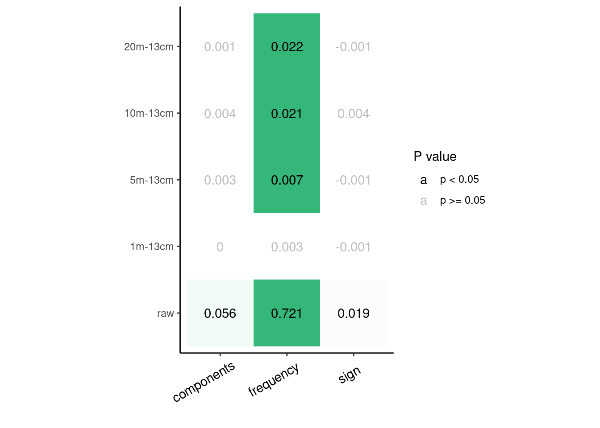
3.2.0.3.2 61 cm (1 foot) recordings
Code
ggplot(estimates[grep("61cm|raw", estimates$model), ], aes(x = predictor,
y = model, fill = rel_coef)) + geom_tile() + coord_equal() + scale_fill_gradient2(low = viridis(10)[3],
high = viridis(10)[7], guide = "none") + geom_text(aes(label = round(coef,
3), color = signif)) + scale_color_manual(values = c("black",
"gray")) + labs(x = "", y = "", color = "P value") + theme_classic() +
theme(axis.text.x = element_text(color = "black", size = 11, angle = 30,
vjust = 0.8, hjust = 0.8))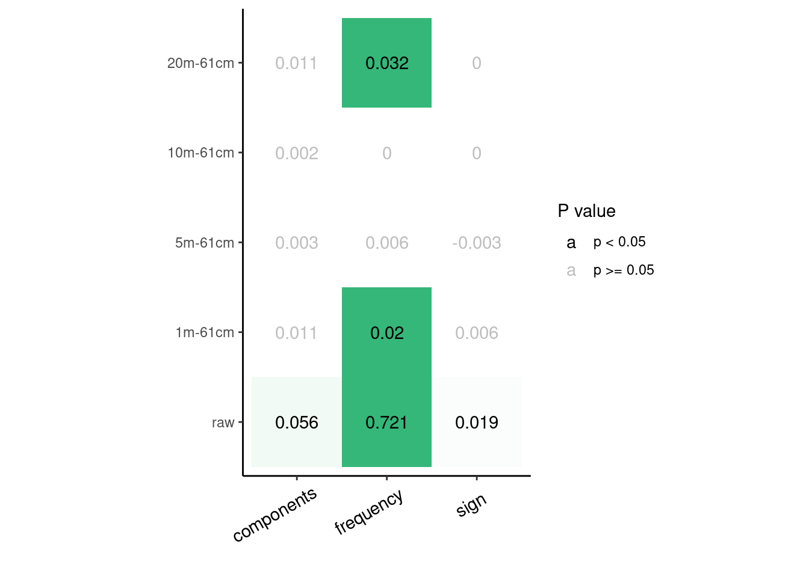
Code
mean_segment <- function(wave, cores = 1, plot = TRUE, pb = TRUE,
thinning = 1, col = wave_col, mean = TRUE, type = "ac", npeak = 20) {
# thin
if (thinning < 1) {
if (length(wave@left) * thinning < 10) {
stop2("thinning is too high, no enough samples left for at least 1 sound file")
}
# reduce size of envelope
wavefrm <- stats::approx(x = seq(0, duration(wave), length.out = length(wave@left)),
y = wave@left, n = round(length(wave@left) * thinning),
method = "linear")$y
} else {
wavefrm <- wave@left
}
# get empirical mode decomposition
if (type == "EMD") {
emds <- EMD::emd(wavefrm, seq_len(length(wavefrm)), boundary = "wave")
perd <- emds$imf[, 4]/max(emds$imf[, 4])
# plot(x = seq_len(length(wavefrm)), y = perd, type =
# 'l') lines(y = wavefrm / max(wavefrm), x =
# seq_len(length(wavefrm)), col = 'gray', lty = 2)
}
if (type == "ac") {
ac <- acf(x = wavefrm, lag.max = length(wavefrm), type = "covariance",
demean = FALSE, plot = FALSE)
perd <- ac$acf/max(ac$acf)
}
tpks <- seewave::fpeaks(cbind(seq_len(length(perd)), perd), plot = FALSE,
threshold = 0.5)
if (nrow(tpks) > npeak) {
tpks <- tpks[1:npeak, ]
}
segment_df <- data.frame(selec = seq_len(nrow(tpks)), pos = tpks[,
1], peak = tpks[, 2])
# get mean number of sample between peaks
mean_dist_peak <- round(mean(diff(segment_df$pos)))
segment_df$start <- segment_df$pos - mean_dist_peak/2
segment_df$end <- segment_df$pos + mean_dist_peak/2
# fix if values are out of wavefrm size
if (segment_df$start[1] > 0) {
segment_df$start[1] <- 0
}
if (segment_df$end[nrow(segment_df)] > length(wavefrm)) {
segment_df$end[nrow(segment_df)] <- length(wavefrm)
}
# extract segments into a list
segments <- lapply(seq_len(nrow(segment_df)), function(x) {
wavefrm[segment_df$start[x]:segment_df$end[x]]
})
# make all the same number of samples
segments <- lapply(segments, function(x) {
approx(x, n = max(sapply(segments, length)))$y
})
# normalize between 1, -1
segments <- lapply(segments, function(x) {
x/max(x)
})
# put all segments in a data frame
segments <- as.data.frame(segments, col.names = seq_len(length(segments)))
# compute mean segment
mean_segment <- rowMeans(segments)
if (plot) {
mean_segment_df <- data.frame(time = seq(0, 1, length.out = nrow(segments)),
mean.amp = rowMeans(segments), sd.amp = apply(segments,
1, sd))
gg <- ggplot(data = mean_segment_df, mapping = aes(x = time,
y = mean.amp)) + geom_line(color = wave_col) + geom_ribbon(aes(ymin = mean.amp -
sd.amp, ymax = mean.amp + sd.amp), alpha = 0.2) + theme_classic(base_size = 25)
print(gg)
}
if (mean) {
return(mean_segment)
} else {
return(segments)
}
}Code
est_schr <- readRDS(file.path(path, "extended_sel_table_degradation_exp_21_oct.RDS"))
mean_schroeders <- warbleR:::pblapply_wrblr_int(cl = 20, seq_len(nrow(est_schr)), function(x) {
wave <- read_wave(est_schr, index = x)
seg <- try_na(mean_segment(wave, plot = FALSE, mean = FALSE, type = "ac", thinning = 0.8))
return(seg)
})
names(mean_schroeders) <- paste0(est_schr$sound.id "-", est_schr$distance, "m")
saveRDS(mean_schroeders, file.path(path, "mean_schroeders_degradation_experiment.RDS"))Code
mean_schroeders <- readRDS(file.path(path, "mean_schroeders_degradation_experiment.RDS"))
mean_schroeders <- mean_schroeders[!sapply(mean_schroeders, function(x) is.na(x[[1]][1]))]
mean_schroeders_list <- lapply(seq_len(length(mean_schroeders)), function(x) {
data.frame(schroeder = names(mean_schroeders)[x], time = seq(0,
1, length.out = nrow(mean_schroeders[[x]])), mean.amp = rowMeans(mean_schroeders[[x]]),
sd.amp = apply(mean_schroeders[[x]], 1, sd))
})
mean_schroeders_df <- do.call(rbind, mean_schroeders_list)Explore results:
- mean period +/- standard deviation using autocorrelation
- first 40 schroeders are shown
Code
ggplot(data = mean_schroeders_df[mean_schroeders_df$schroeder %in%
unique(mean_schroeders_df$schroeder)[grep("1m", unique(mean_schroeders_df$schroeder))[1:80]],
], mapping = aes(x = time, y = mean.amp)) + geom_line(color = wave_col) +
geom_ribbon(aes(ymin = mean.amp - sd.amp, ymax = mean.amp + sd.amp),
alpha = 0.2) + theme_classic(base_size = 5) + facet_wrap("~ schroeder",
ncol = 5, scales = "free_y")
Code
ggplot(data = mean_schroeders_df[mean_schroeders_df$schroeder %in%
unique(mean_schroeders_df$schroeder)[grep("5m", unique(mean_schroeders_df$schroeder))[1:80]],
], mapping = aes(x = time, y = mean.amp)) + geom_line(color = wave_col) +
geom_ribbon(aes(ymin = mean.amp - sd.amp, ymax = mean.amp + sd.amp),
alpha = 0.2) + theme_classic(base_size = 5) + facet_wrap("~ schroeder",
ncol = 5, scales = "free_y")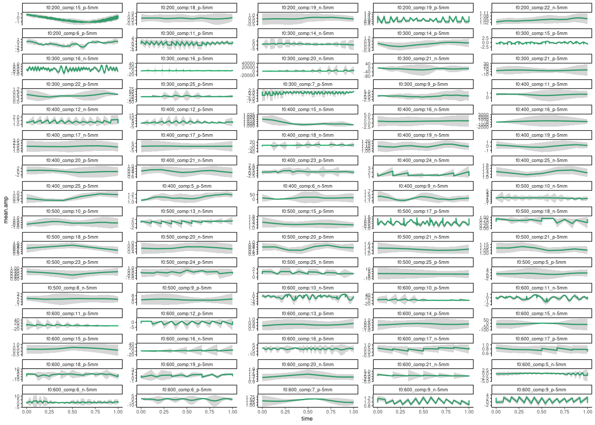
Code
ggplot(data = mean_schroeders_df[mean_schroeders_df$schroeder %in%
unique(mean_schroeders_df$schroeder)[grep("10m", unique(mean_schroeders_df$schroeder))[1:80]],
], mapping = aes(x = time, y = mean.amp)) + geom_line(color = wave_col) +
geom_ribbon(aes(ymin = mean.amp - sd.amp, ymax = mean.amp + sd.amp),
alpha = 0.2) + theme_classic(base_size = 5) + facet_wrap("~ schroeder",
ncol = 5, scales = "free_y")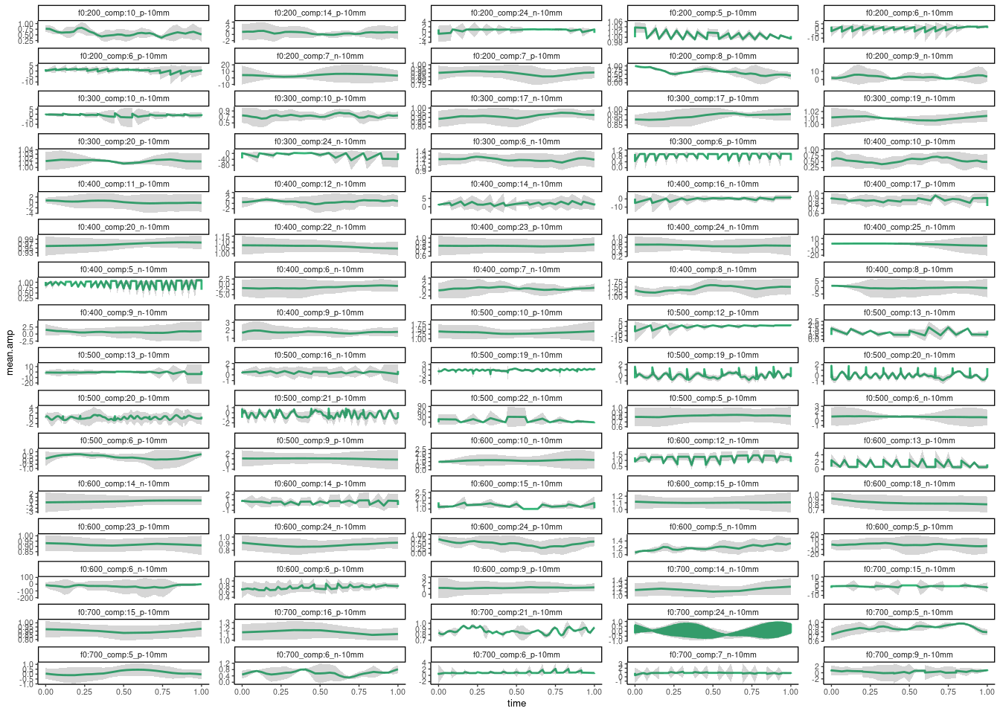
Code
ggplot(data = mean_schroeders_df[mean_schroeders_df$schroeder %in%
unique(mean_schroeders_df$schroeder)[grep("20m", unique(mean_schroeders_df$schroeder))[1:80]],
], mapping = aes(x = time, y = mean.amp)) + geom_line(color = wave_col) +
geom_ribbon(aes(ymin = mean.amp - sd.amp, ymax = mean.amp + sd.amp),
alpha = 0.2) + theme_classic(base_size = 5) + facet_wrap("~ schroeder",
ncol = 5, scales = "free_y")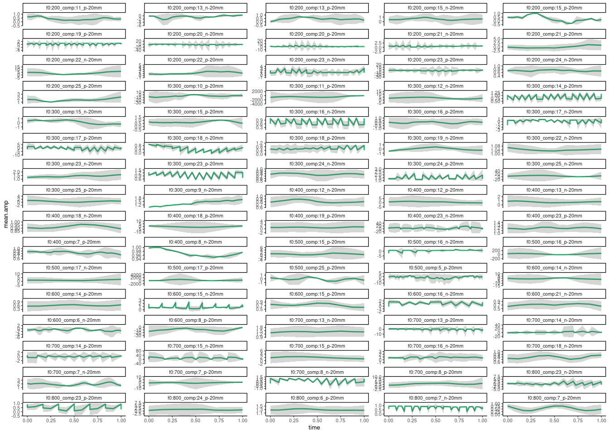
Code
# mean_schroeders_in <- mean_schroeders[grep('in_',
# names(mean_schroeders))]
all_nms <- names(mean_schroeders)
min_dist_lists <- lapply(c("1m", "5m", "10m", "20m"), function(y) {
nms <- grep(y, all_nms, value = TRUE)
cmbs <- t(combn(nms, 2))
min_dist_l <- pbapply::pbsapply(cl = 22, 1:nrow(cmbs), function(x) {
s1 <- rowMeans(mean_schroeders[[cmbs[x, 1]]])
s2 <- rowMeans(mean_schroeders[[cmbs[x, 2]]])
# make same length if (length(s1) != length(s2))
s1 <- approx(s1, n = 100)$y
s2 <- approx(s2, n = 100)$y
# duplicate 1
s1 <- rep(s1, 2)
# run dtw over longer vector
dists <- vapply(seq_len(length(s1) - length(s2)), function(x) {
segment <- s1[x:min(c(x + length(s2) - 1), length(s1))]
dtw_dist <- warbleR::try_na(dtw::dtwDist(mx = rbind(s2,
segment)))
return(dtw_dist[1, 2])
}, FUN.VALUE = numeric(1))
return(data.frame(schr1 = cmbs[x, 1], schdr2 = cmbs[x, 2],
min(dists)))
})
min_dists <- do.call(rbind, min_dist_l)
min_dists <- as.data.frame(matrix(min_dists[, 1], ncol = 3, byrow = TRUE))
names(min_dists) <- c("schr1", "schr2", "dist")
min_dists$dist <- as.numeric(min_dists$dist)
return(min_dists)
})
names(min_dist_lists) <- c("1m", "5m", "10m", "20m")
saveRDS(min_dist_lists, file.path(path, "dtw_distance_schroeders_degradation_experiment_by_distance.RDS"))- DTW distances not estimated as average Schroeders did not adequately represent structure
4 Degradation as a function of signal-to-noise ratio
- Adding synthetic noise to the master sound file annotations to decrease the signal-to-noise
- Evaluate at which signal-to-noise ratio Schroeder sign can still be distinguished
4.0.1 Add synthetic noise
Code
master_annotations <- imp_raven(path = "./data/processed", files = "schroeder_master.wav.txt",
all.data = TRUE, warbler.format = TRUE)
master_annotations$sound.id <- paste0("f0:", master_annotations$f0,
"_comp:", master_annotations$label)
master_annotations$sound.id[1] <- "start_marker"
master_annotations$sound.id[nrow(master_annotations)] <- "end_marker"
names(master_annotations)
est_master <- selection_table(master_annotations[grep("marker", master_annotations$sound.id,
invert = TRUE), ], extended = TRUE, mar = 0.1, confirm.extended = FALSE,
path = path)
# est_schr <-
# readRDS('./data/processed/extended_selection_table_schroeders.RDS')
# est_schr <- readRDS(file.path(path,
# 'extended_sel_table_degradation_exp.RDS')) est_schr$treatment
# <- ifelse(grepl('inside', est_schr$sound.files), 'inside',
# 'outside') est_schr$sound.id <- 1:nrow(est_schr) est_in <-
# est_schr[est_schr$treatment == 'inside', ]
est_in <- signal_to_noise_ratio(est_master, mar = 0.07, cores = 20)
hist(est_in$signal.to.noise.ratio)
adj_snr_schroeder <- lapply(30:1, function(i) {
print(i)
est_schr_adj <- baRulho::add_noise(X = est_master, target.snr = i,
precision = 0.1, mar = 0.07, cores = 20)
mean_schroeders <- warbleR:::pblapply_wrblr_int(cl = 20, seq_len(nrow(est_schr_adj)),
function(x) {
wave <- read_wave(est_schr_adj, index = x)
seg <- try_na(mean_segment(wave, plot = FALSE, mean = FALSE,
type = "ac", thinning = 0.8))
return(seg)
})
names(mean_schroeders) <- est_schr_adj$sound.id
return(mean_schroeders)
})
names(adj_snr_schroeder) <- 30:1
# x <- adj_snr_schroeder[['30']]
adj_snr_schroeder <- lapply(adj_snr_schroeder, function(x) x[sapply(x,
is.data.frame)])
adj_snr_schroeder <- adj_snr_schroeder[sapply(adj_snr_schroeder, length) >
0]
saveRDS(adj_snr_schroeder, file.path(path, "mean_schroeders_adjusted_snr.RDS"))Code
adj_snr_schroeder <- readRDS(file.path(path, "mean_schroeders_adjusted_snr.RDS"))
adj_snr_schroeder_list <- warbleR:::pblapply_wrblr_int(seq_along(adj_snr_schroeder),
cl = 20, function(y) {
Y <- adj_snr_schroeder[[y]]
Y <- Y[!sapply(Y, function(x) is.na(x[[1]][1]))]
mean_schroeders_list <- lapply(seq_len(length(Y)), function(x) {
data.frame(schroeder = names(Y)[x], time = seq(0, 1, length.out = nrow(Y[[x]])),
mean.amp = rowMeans(Y[[x]]), sd.amp = apply(Y[[x]],
1, sd))
})
mean_schroeders_df <- do.call(rbind, mean_schroeders_list)
mean_schroeders_df$target.snr <- names(adj_snr_schroeder)[y]
return(mean_schroeders_df)
})
adj_snr_schroeder_list <- adj_snr_schroeder_list[sapply(adj_snr_schroeder_list,
is.data.frame)]
mean_schroeders_df <- do.call(rbind, adj_snr_schroeder_list)
saveRDS(mean_schroeders_df, file.path(path, "mean_schroeders_adjusted_snr_dataframe.RDS"))Code
ggplot(data = mean_schroeders_out[mean_schroeders_out$schroeder %in%
unique(mean_schroeders_out$schroeder)[1:40], ], mapping = aes(x = time,
y = mean.amp)) + geom_line(color = wave_col) + geom_ribbon(aes(ymin = mean.amp -
sd.amp, ymax = mean.amp + sd.amp), alpha = 0.2) + theme_classic(base_size = 5) +
facet_wrap("~ schroeder", ncol = 5, scales = "free_y")4.0.2 Statistical signal of structural features
- Structural features: frequency, components (harmonics) and sign
Code
adj_snr_schroeder <- readRDS(file.path(path, "mean_schroeders_adjusted_snr.RDS"))
# names(adj_snr_schroeder) adj_snr_schroeder <-
# adj_snr_schroeder[!names(adj_snr_schroeder) %in%
# names(dtw_dists_snr_list)]
# adj_snr_schroeder <-
# adj_snr_schroeder[names(adj_snr_schroeder) != '30']
dtw_dists_snr_list <- warbleR:::pblapply_wrblr_int(names(adj_snr_schroeder),
cl = 20, function(y) {
# print(y)
Y <- adj_snr_schroeder[[which(names(adj_snr_schroeder) ==
y)]]
Y <- Y[!sapply(Y, function(x) is.na(x[[1]][1]))]
nms <- names(Y)
cmbs <- t(combn(nms, 2))
min_dist_l <- sapply(1:nrow(cmbs), function(x) {
s1 <- rowMeans(Y[[cmbs[x, 1]]])
s2 <- rowMeans(Y[[cmbs[x, 2]]])
# make same length if (length(s1) != length(s2))
s1 <- approx(s1, n = 100)$y
s2 <- approx(s2, n = 100)$y
# duplicate 1
s1 <- rep(s1, 2)
# run dtw over longer vector
dists <- vapply(seq_len(length(s1) - length(s2)), function(x) {
segment <- s1[x:min(c(x + length(s2) - 1), length(s1))]
dtw_dist <- warbleR::try_na(dtw::dtwDist(mx = rbind(s2,
segment)))
return(dtw_dist[1, 2])
}, FUN.VALUE = numeric(1))
return(data.frame(schr1 = cmbs[x, 1], schdr2 = cmbs[x,
2], min(dists)))
})
min_dists <- do.call(rbind, min_dist_l)
min_dists <- as.data.frame(matrix(min_dists[, 1], ncol = 3,
byrow = TRUE))
names(min_dists) <- c("schr1", "schr2", "dist")
min_dists$dist <- as.numeric(min_dists$dist)
min_dists$target.snr <- y
return(min_dists)
})
names(dtw_dists_snr_list) <- names(adj_snr_schroeder)
saveRDS(dtw_dists_snr_list, file.path(path, "dtw_distance_schroeders_degradation_experiment_varying_snr.RDS"))4.0.2.1 Statistical analysis
Modeling: - Multiple Regression on distance Matrices - Model:
\[\begin{align*}
Dissimilarity &\sim frequency + components + sign
\end{align*}\] - Response values scaled to make effect sizes comparable across models - Predictors were coded as pairwise binary matrices in which 0 means that calls in a dyad belong to the same level and 1 means calls belong to different levels - One model for each environment treatment as well as on the original model sounds
Code
dtw_dists_snr_list <- readRDS(file.path(path, "dtw_distance_schroeders_degradation_experiment_varying_snr.RDS"))
# min_dists <- dtw_dists_snr_list$`20`
dtw_wv_mod_list <- warbleR:::pblapply_wrblr_int(dtw_dists_snr_list,
cl = 20, function(x) {
# x$dist <- scale(x$dist)
target_snr <- x$target.snr
x$target.snr <- NULL
dist_tri <- PhenotypeSpace::rectangular_to_triangular(x)
freq_bi_tri <- as.dist(binary_triangular_matrix(group = sapply(strsplit(rownames(dist_tri),
"_"), "[[", 1)))
comp_bi_tri <- as.dist(binary_triangular_matrix(group = gsub("_n|_p",
"", sapply(strsplit(rownames(dist_tri), "_"), "[[", 2))))
sign_bi_tri <- as.dist(binary_triangular_matrix(group = sapply(strsplit(rownames(dist_tri),
"_"), "[[", 3)))
rect_var <- cbind(as.dist(dist_tri), freq_bi_tri, comp_bi_tri,
sign_bi_tri)
colnames(rect_var) <- c("dtw_dist", "frequency", "components",
"sign")
dtw_wv_mod <- MRM2(formula = dtw_dist ~ frequency + components +
sign, nperm = 10000, mat = rect_var)
return(dtw_wv_mod)
})
saveRDS(dtw_wv_mod_list, "./data/processed/matrix_correlation_dtw_distance_varying_snr.RDS")Code
mods <- readRDS("./data/processed/matrix_correlation_dtw_distance_varying_snr.RDS")
estimates <- do.call(rbind, lapply(seq_along(mods), function(x) {
Y <- data.frame(mods[[x]]$coef[-1, ])
# Y$rel_coef <- Y[, 1] / max(Y[, 1])
Y$rel_coef <- Y[, 1]
Y$mod <- names(mods)[x]
Y$predictor <- rownames(Y)
names(Y) <- c("coef", "p", "rel_coef", "model", "predictor")
return(Y)
}))
estimates$rel_coef <- ifelse(estimates$p < 0.05, estimates$rel_coef,
0)
estimates$signif <- ifelse(estimates$p < 0.05, "p < 0.05", "p >= 0.05")
estimates$model_f <- factor(estimates$model, levels = 30:4)
ggplot(estimates, aes(x = predictor, y = model_f, fill = rel_coef)) +
geom_tile() + coord_equal() + scale_fill_gradient2(low = viridis(10)[3],
high = viridis(10)[7], guide = "none") + geom_text(aes(label = round(coef,
3), color = signif)) + scale_color_manual(values = c("black",
"gray")) + labs(x = "Signal-to-noise ratio", y = "", color = "P value") +
theme_classic() + theme(axis.text.x = element_text(color = "black",
size = 11, angle = 30, vjust = 0.8, hjust = 0.8))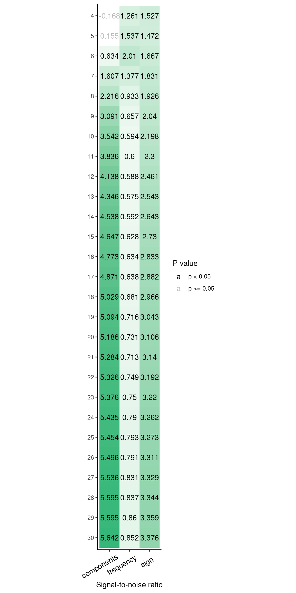
Code
coef_by_signif <- aggregate(coef ~ signif, data = estimates, FUN = range)
ggplot(estimates, aes(y = coef, x = model, color = predictor, lty = predictor)) +
geom_line(linewidth = 1.6) + labs(x = "Signal-to-noise ratio",
y = "Effect size") + scale_color_viridis_d(alpha = 0.7, begin = 0.2,
end = 0.8) + geom_hline(yintercept = mean(coef_by_signif[, 2][1,
1], coef_by_signif[, 2][2, 2]), lty = 2, color = "gray") + theme_classic()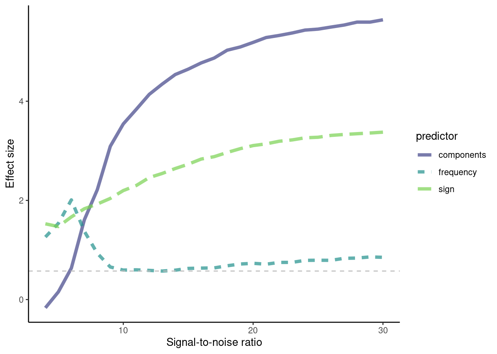
4.0.2.2 Only sign
Code
ggplot(estimates[estimates$predictor == "sign", ], aes(y = coef, x = model,
color = predictor, lty = predictor)) + geom_line(linewidth = 1.6) +
geom_smooth() + labs(x = "Signal-to-noise ratio", y = "Effect size") +
scale_color_viridis_d(alpha = 0.7, begin = 0.2, end = 0.8) + geom_hline(yintercept = mean(coef_by_signif[,
2][1, 1], coef_by_signif[, 2][2, 2]), lty = 2, color = "gray") +
theme_classic()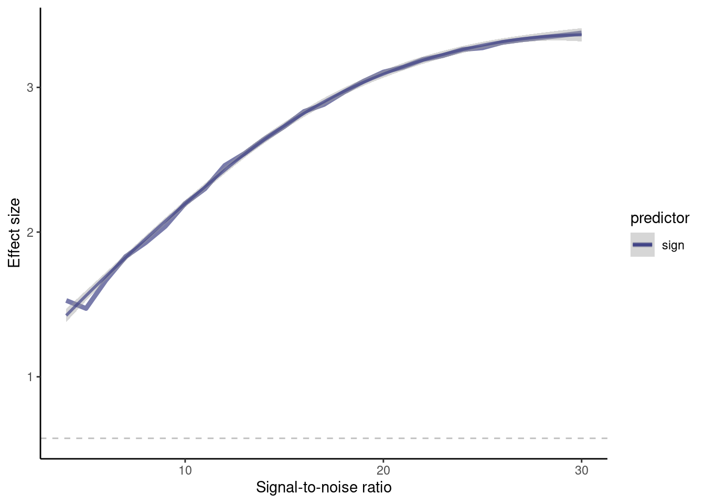
4.0.2.3 By frequency
Code
dtw_dists_snr_list <- readRDS(file.path(path, "dtw_distance_schroeders_degradation_experiment_varying_snr.RDS"))
dtw_wv_mod_list <- warbleR:::pblapply_wrblr_int(dtw_dists_snr_list,
cl = 1, function(y) {
# print(y$target.snr[1])
freqs <- unique(substr(y[, 1], 0, 6))
mods <- lapply(1:length(freqs), function(i) {
# extract only those with the same freq
x <- y[grepl(paste(freqs[i], collapse = "|"), y$schr1) &
grepl(paste(freqs[i], collapse = "|"), y$schr2), ]
target_snr <- x$target.snr
x$target.snr <- NULL
dist_tri <- PhenotypeSpace::rectangular_to_triangular(x)
if (nrow(dist_tri) > 2) {
comp_bi_tri <- as.dist(binary_triangular_matrix(group = gsub("_n|_p",
"", sapply(strsplit(rownames(dist_tri), "_"), "[[",
2))))
sign_bi_tri <- as.dist(binary_triangular_matrix(group = sapply(strsplit(rownames(dist_tri),
"_"), "[[", 3)))
rect_var <- cbind(as.dist(dist_tri), comp_bi_tri,
sign_bi_tri)
colnames(rect_var) <- c("dtw_dist", "components",
"sign")
dtw_wv_mod <- MRM2(formula = dtw_dist ~ components +
sign, nperm = 10000, mat = rect_var)
} else dtw_wv_mod <- NULL
return(dtw_wv_mod)
})
names(mods) <- paste0("snr:", y$target.snr[1], "_", freqs)
mods <- mods[!sapply(mods, is.null)]
return(mods)
})
saveRDS(dtw_wv_mod_list, "./data/processed/matrix_correlation_dtw_distance_varying_snr_by_frequency.RDS")Discriminating Schroeder’s by sign grouped by frequency:
Code
mods <- readRDS("./data/processed/matrix_correlation_dtw_distance_varying_snr_by_frequency.RDS")
estimates_list <- lapply(mods, function(y) {
estimates <- do.call(rbind, lapply(seq_along(y), function(x) {
Y <- data.frame(y[[x]]$coef[-1, ])
# Y$rel_coef <- Y[, 1] / max(Y[, 1])
Y$rel_coef <- Y[, 1]
Y$mod <- names(y)[x]
Y$predictor <- rownames(Y)
Y$freq <- strsplit(names(y)[x], "_")[[1]][2]
Y$freq <- strsplit(Y$freq, ":")[[1]][2]
names(Y) <- c("coef", "p", "rel_coef", "model", "predictor",
"freq")
Y$snr <- gsub("_", "", substr(names(y)[x], 0, 6))
return(Y)
}))
estimates$rel_coef <- ifelse(estimates$p < 0.05, estimates$rel_coef,
0)
estimates$signif <- ifelse(estimates$p < 0.05, "p < 0.05", "p >= 0.05")
return(estimates)
})
estimates <- do.call(rbind, estimates_list)
estimates$snr <- as.numeric(substr(estimates$snr, 5, nchar(estimates$snr)))
rownames(estimates) <- 1:nrow(estimates)
coef_by_signif <- aggregate(coef ~ signif, data = estimates[estimates$predictor ==
"sign", ], FUN = range)
ggplot(estimates[estimates$predictor == "sign", ], aes(y = coef, x = snr,
color = freq)) + geom_line(linewidth = 1.6) + labs(x = "Signal-to-noise ratio",
y = "Effect size when discriminating sign", color = "F0\nfrequency") +
scale_color_viridis_d(alpha = 0.7, begin = 0.2, end = 0.8) + theme_classic()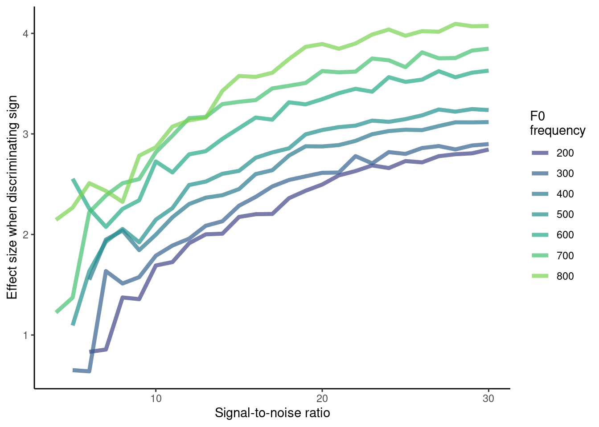
Discriminating Schroeder’s by number of components grouped by frequency:
Code
coef_by_signif <- aggregate(coef ~ signif, data = estimates[estimates$predictor ==
"components", ], FUN = range)
ggplot(estimates[estimates$predictor == "components", ], aes(y = coef,
x = snr, color = freq)) + geom_line(linewidth = 1.6) + labs(x = "Signal-to-noise ratio",
y = "Effect size when discriminating number of components", color = "F0\nfrequency") +
scale_color_viridis_d(alpha = 0.7, begin = 0.2, end = 0.8) + geom_hline(yintercept = mean(coef_by_signif[,
2][1, 1], coef_by_signif[, 2][2, 2]), lty = 2, color = "gray") +
theme_classic()
4.0.2.4 By component
Code
dtw_dists_snr_list <- readRDS(file.path(path, "dtw_distance_schroeders_degradation_experiment_varying_snr.RDS"))
dtw_wv_mod_list <- warbleR:::pblapply_wrblr_int(dtw_dists_snr_list,
cl = 1, function(y) {
# print(y$target.snr[1])
comps <- unique(sapply(strsplit(y[, 1], "_"), "[[", 2))
mods <- lapply(1:length(comps), function(i) {
# extract only those with the same freq
x <- y[grepl(paste(comps[i], collapse = "|"), y$schr1) &
grepl(paste(comps[i], collapse = "|"), y$schr2), ]
target_snr <- x$target.snr
x$target.snr <- NULL
dist_tri <- PhenotypeSpace::rectangular_to_triangular(x)
if (nrow(dist_tri) > 2) {
freq_bi_tri <- as.dist(binary_triangular_matrix(group = sapply(strsplit(rownames(dist_tri),
"_"), "[[", 1)))
sign_bi_tri <- as.dist(binary_triangular_matrix(group = sapply(strsplit(rownames(dist_tri),
"_"), "[[", 3)))
rect_var <- cbind(as.dist(dist_tri), freq_bi_tri,
sign_bi_tri)
colnames(rect_var) <- c("dtw_dist", "frequency", "sign")
dtw_wv_mod <- MRM2(formula = dtw_dist ~ components +
sign, nperm = 10000, mat = rect_var)
} else dtw_wv_mod <- NULL
return(dtw_wv_mod)
})
names(mods) <- paste0("snr:", y$target.snr[1], "_", comps)
mods <- mods[!sapply(mods, is.null)]
return(mods)
})
saveRDS(dtw_wv_mod_list, "./data/processed/matrix_correlation_dtw_distance_varying_snr_by_components.RDS")Discriminating Schroeder’s by sign grouped by number of components:
Code
mods <- readRDS("./data/processed/matrix_correlation_dtw_distance_varying_snr_by_components.RDS")
estimates_list <- lapply(mods, function(y) {
estimates <- do.call(rbind, lapply(seq_along(y), function(x) {
Y <- data.frame(y[[x]]$coef[-1, ])
# Y$rel_coef <- Y[, 1] / max(Y[, 1])
Y$rel_coef <- Y[, 1]
Y$mod <- names(y)[x]
Y$predictor <- rownames(Y)
Y$comps <- strsplit(names(y)[x], "_")[[1]][2]
Y$comps <- strsplit(Y$comps, ":")[[1]][2]
names(Y) <- c("coef", "p", "rel_coef", "model", "predictor",
"comps")
Y$snr <- gsub("_", "", substr(names(y)[x], 0, 6))
return(Y)
}))
estimates$rel_coef <- ifelse(estimates$p < 0.05, estimates$rel_coef,
0)
estimates$signif <- ifelse(estimates$p < 0.05, "p < 0.05", "p >= 0.05")
return(estimates)
})
estimates <- do.call(rbind, estimates_list)
estimates$snr <- as.numeric(substr(estimates$snr, 5, nchar(estimates$snr)))
estimates$comps <- factor(estimates$comps, levels = unique(as.numeric(estimates$comps)))
rownames(estimates) <- 1:nrow(estimates)
coef_by_signif <- aggregate(coef ~ signif, data = estimates[estimates$predictor ==
"sign", ], FUN = range)
ggplot(estimates[estimates$predictor == "sign", ], aes(y = coef, x = snr,
color = comps)) + geom_line(linewidth = 1.6) + labs(x = "Signal-to-noise ratio",
y = "Effect size when discriminating sign", color = "Components") +
scale_color_viridis_d(alpha = 0.7, begin = 0.2, end = 0.8) + geom_hline(yintercept = mean(coef_by_signif[,
2][1, 1], coef_by_signif[, 2][2, 2]), lty = 2, color = "gray") +
theme_classic()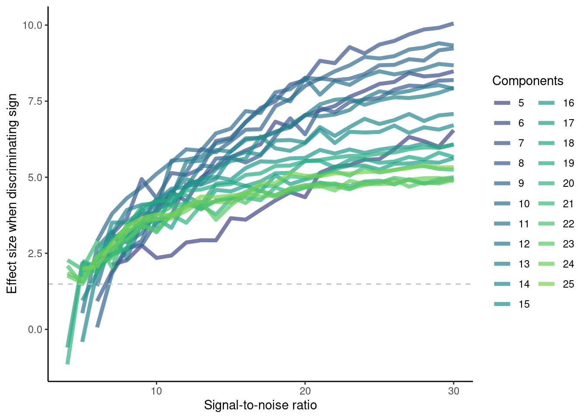
Discriminating Schroeder’s by frequency grouped by number of components:
Code
ggplot(estimates[estimates$predictor == "frequency", ], aes(y = coef,
x = snr, color = comps)) + geom_line(linewidth = 1.6) + labs(x = "Signal-to-noise ratio",
y = "Effect size when discriminating frequency", color = "Components") +
scale_color_viridis_d(alpha = 0.7, begin = 0.2, end = 0.8) + theme_classic()
4.0.3 Add synthetic noise
Code
raw_schroeders <- readRDS("./data/processed/mean_random_start_schroeders_ac.RDS")
est_schr_raw <- readRDS("./data/processed/extended_selection_table_random_start_schroeders.RDS")
source("~/Dropbox/Projects/acoustic_fine_features_zebra_finch/scripts/mean_segment.R")
est_schr_raw$sound.id <- paste0("f0:", est_schr_raw$f0, "_comp:",
est_schr_raw$label)
raw_schroeder_periods <- warbleR:::pblapply_wrblr_int(cl = 20, seq_len(nrow(est_schr_raw)),
function(x) {
wave <- read_wave(est_schr_raw, index = x)
seg <- try_na(mean_segment(wave, plot = FALSE, mean = TRUE,
type = "ac"))
schr <- paste0("f0:", est_schr_raw$f0[x], "_comp:", est_schr_raw$label[x])
out <- data.frame(schr = schr, samples = if (!is.na(seg[1]))
seg$mean_dist_peak else NA)
return(out)
})
raw_schroeder_periods <- do.call(rbind, raw_schroeder_periods)
master_annotations <- imp_raven(path = "./data/processed", files = "schroeder_master.wav.txt",
all.data = TRUE, warbler.format = TRUE)
master_annotations$sound.id <- paste0("f0:", master_annotations$f0,
"_comp:", master_annotations$label)
master_annotations$sound.id[1] <- "start_marker"
master_annotations$sound.id[nrow(master_annotations)] <- "end_marker"
names(master_annotations)
est_master <- selection_table(master_annotations[grep("marker", master_annotations$sound.id,
invert = TRUE), ], extended = TRUE, mar = 0.1, confirm.extended = FALSE,
path = path)
# names(adj_snr_schroeder) adj_snr_schroeder <-
# adj_snr_schroeder[!names(adj_snr_schroeder) %in%
# names(dtw_dists_snr_list)]
# adj_snr_schroeder <-
# adj_snr_schroeder[names(adj_snr_schroeder) != '30']
dtw_dists_snr_list <- warbleR:::pblapply_wrblr_int(30:1, function(i) {
est_schr_adj <- add_noise(X = est_master, target.snr = i, precision = 0.1,
mar = 0.07, cores = 20)
nms <- est_schr_adj$sound.id
cmbs <- t(combn(nms, 2))
min_dist_l <- pbapply::pbsapply(cl = 1, 1:nrow(cmbs), function(x) {
s1 <- read_wave(est_schr_adj, index = which(est_schr_adj$sound.id %in%
cmbs[x, 1]))@left
s2 <- read_wave(est_schr_adj, index = which(est_schr_adj$sound.id %in%
cmbs[x, 2]))@left
p1 <- raw_schroeder_periods$samples[raw_schroeder_periods$schr ==
cmbs[x, 1]]
p2 <- raw_schroeder_periods$samples[raw_schroeder_periods$schr ==
cmbs[x, 2]]
# get second repeatition of schroeders
s1 <- s1[p1:(p1 * 2)]
s2 <- s2[p2:(p2 * 2)]
# make same length if (length(s1) != length(s2))
s1 <- approx(s1, n = 100)$y
s2 <- approx(s2, n = 100)$y
# duplicate 1
s1 <- rep(s1, 2)
# run dtw over longer vector
dists <- vapply(seq_len(length(s1) - length(s2)), function(x) {
segment <- s1[x:min(c(x + length(s2) - 1), length(s1))]
dtw_dist <- warbleR::try_na(dtw::dtwDist(mx = rbind(s2,
segment)))
return(dtw_dist[1, 2])
}, FUN.VALUE = numeric(1))
return(data.frame(schr1 = cmbs[x, 1], schdr2 = cmbs[x, 2],
min(dists)))
})
min_dists <- do.call(rbind, min_dist_l)
min_dists <- as.data.frame(matrix(min_dists[, 1], ncol = 3, byrow = TRUE))
names(min_dists) <- c("schr1", "schr2", "dist")
min_dists$dist <- as.numeric(min_dists$dist)
# min_dist_l <- sapply(1:nrow(cmbs), function(x) { s1 <-
# rowMeans(Y[[cmbs[x, 1]]]) s2 <- rowMeans(Y[[cmbs[x, 2]]])
# # make same length # if (length(s1) != length(s2)) s1 <-
# approx(s1, n = 100)$y s2 <- approx(s2, n = 100)$y #
# duplicate 1 s1 <- rep(s1, 2) # run dtw over longer vector
# dists <- vapply(seq_len(length(s1) - length(s2)),
# function(x) { segment <- s1[x:min(c(x + length(s2) - 1),
# length(s1))] dtw_dist <- warbleR::try_na(dtw::dtwDist(mx =
# rbind(s2, segment))) return(dtw_dist[1, 2]) }, FUN.VALUE =
# numeric(1)) return(data.frame(schr1 = cmbs[x, 1], schdr2 =
# cmbs[x, 2], min(dists))) }) min_dists <- do.call(rbind,
# min_dist_l) min_dists <- as.data.frame(matrix(min_dists[,
# 1], ncol = 3, byrow = TRUE)) names(min_dists) <-
# c('schr1', 'schr2', 'dist') min_dists$dist <-
# as.numeric(min_dists$dist)
min_dists$target.snr <- y
return(min_dists)
})
names(dtw_dists_snr_list) <- 30:1
saveRDS(dtw_dists_snr_list, file.path(path, "dtw_distance_schroeders_degradation_experiment_varying_snr_start_segment.RDS"))
# eg <- expand.grid(distance = c('1m', '5m', '10m', '20m'),
# height = c('13cm', '61cm'))
# nms <- est_schr_raw$sound.id cmbs <- t(combn(nms, 2))
# min_dist_l <- pbapply::pbsapply(cl = 22, 1:nrow(cmbs),
# function(x) { s1 <- read_wave(est_schr_raw, index =
# which(est_schr_raw$sound.id %in% cmbs[x, 1]))@left s2 <-
# read_wave(est_schr_raw, index = which(est_schr_raw$sound.id
# %in% cmbs[x, 2]))@left p1 <-
# raw_schroeder_periods$samples[raw_schroeder_periods$schr ==
# cmbs[x, 1]] p2 <-
# raw_schroeder_periods$samples[raw_schroeder_periods$schr ==
# cmbs[x, 2]] # get second repeatition of schroeders s1 <-
# s1[p1:(p1 * 2)] s2 <- s2[p2:(p2 * 2)] # make same length # if
# (length(s1) != length(s2)) s1 <- approx(s1, n = 100)$y s2 <-
# approx(s2, n = 100)$y # duplicate 1 s1 <- rep(s1, 2) # run dtw
# over longer vector dists <- vapply(seq_len(length(s1) -
# length(s2)), function(x) { segment <- s1[x:min(c(x +
# length(s2) - 1), length(s1))] dtw_dist <-
# warbleR::try_na(dtw::dtwDist(mx = rbind(s2, segment)))
# return(dtw_dist[1, 2]) }, FUN.VALUE = numeric(1))
# return(data.frame(schr1 = cmbs[x, 1], schdr2 = cmbs[x, 2],
# min(dists))) }) min_dists <- do.call(rbind, min_dist_l)
# min_dists <- as.data.frame(matrix(min_dists[, 1], ncol = 3,
# byrow = TRUE)) names(min_dists) <- c('schr1', 'schr2', 'dist')
# min_dists$dist <- as.numeric(min_dists$dist) saveRDS(
# min_dists,
# './data/processed/dtw_distance_schroeder_sample_raw.RDS' )4.0.4 Statistical signal of structural features
- Structural features: frequency, components (harmonics) and sign
4.0.5 Statistical analysis
Modeling: - Multiple Regression on distance Matrices - Model:
\[\begin{align*}
Dissimilarity &\sim frequency + components + sign
\end{align*}\] - Response values scaled to make effect sizes comparable across models - Predictors were coded as pairwise binary matrices in which 0 means that calls in a dyad belong to the same level and 1 means calls belong to different levels - One model for each environment treatment as well as on the original model sounds
Code
dtw_dists_snr_list <- readRDS(file.path(path, "dtw_distance_schroeders_degradation_experiment_varying_snr_start_segment.RDS"))
# min_dists <- dtw_dists_snr_list$`20`
dtw_wv_mod_list <- warbleR:::pblapply_wrblr_int(seq_along(dtw_dists_snr_list),
cl = 10, function(w) {
x <- dtw_dists_snr_list[[w]]
# x$dist <- scale(x$dist)
target_snr <- names(dtw_dists_snr_list)[w]
x$target.snr <- NULL
dist_tri <- PhenotypeSpace::rectangular_to_triangular(x)
freq_bi_tri <- as.dist(binary_triangular_matrix(group = sapply(strsplit(rownames(dist_tri),
"_"), "[[", 1)))
comp_bi_tri <- as.dist(binary_triangular_matrix(group = gsub("_n|_p",
"", sapply(strsplit(rownames(dist_tri), "_"), "[[", 2))))
sign_bi_tri <- as.dist(binary_triangular_matrix(group = sapply(strsplit(rownames(dist_tri),
"_"), "[[", 3)))
rect_var <- cbind(as.dist(dist_tri), freq_bi_tri, comp_bi_tri,
sign_bi_tri)
colnames(rect_var) <- c("dtw_dist", "frequency", "components",
"sign")
dtw_wv_mod <- MRM2(formula = dtw_dist ~ frequency + components +
sign, nperm = 10000, mat = rect_var)
dtw_wv_mod$target_snr <- target_snr
return(dtw_wv_mod)
})
saveRDS(dtw_wv_mod_list, "./data/processed/matrix_correlation_dtw_distance_varying_snr_start_segment.RDS")Code
mods <- readRDS("./data/processed/matrix_correlation_dtw_distance_varying_snr_start_segment.RDS")
estimates <- do.call(rbind, lapply(seq_along(mods), function(x) {
Y <- data.frame(mods[[x]]$coef[-1, ])
# Y$rel_coef <- Y[, 1] / max(Y[, 1])
Y$rel_coef <- Y[, 1]
Y$mod <- names(mods)[x]
Y$predictor <- rownames(Y)
Y$model <- mods[[x]]$target_snr
names(Y) <- c("coef", "p", "rel_coef", "predictor", "model")
return(Y)
}))
estimates$rel_coef <- ifelse(estimates$p < 0.05, estimates$rel_coef,
0)
estimates$signif <- ifelse(estimates$p < 0.05, "p < 0.05", "p >= 0.05")
estimates$model_f <- factor(estimates$model, levels = 30:1)
ggplot(estimates, aes(x = predictor, y = model_f, fill = coef)) +
geom_tile() + coord_equal() + scale_fill_gradient2(low = viridis(10)[3],
high = viridis(10)[7], guide = "none") + geom_text(aes(label = round(coef,
3), color = signif)) + scale_color_manual(values = c("black",
"gray")) + labs(x = "Signal-to-noise ratio", y = "", color = "P value") +
theme_classic() + theme(axis.text.x = element_text(color = "black",
size = 11, angle = 30, vjust = 0.8, hjust = 0.8))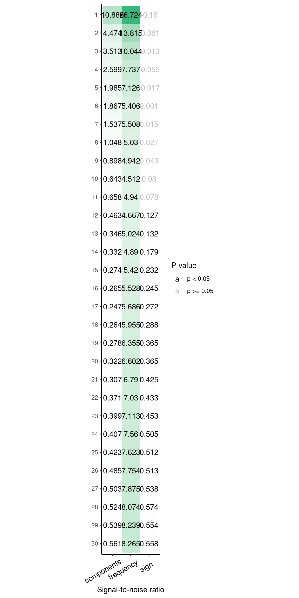
Code
coef_by_signif <- aggregate(coef ~ signif, data = estimates, FUN = range)
ggplot(estimates, aes(y = coef, x = model, color = predictor, lty = predictor)) +
geom_line(linewidth = 1.6) + labs(x = "Signal-to-noise ratio",
y = "Effect size") + scale_color_viridis_d(alpha = 0.7, begin = 0.2,
end = 0.8) + geom_hline(yintercept = mean(coef_by_signif[, 2][1,
1], coef_by_signif[, 2][2, 2]), lty = 2, color = "gray") + theme_classic()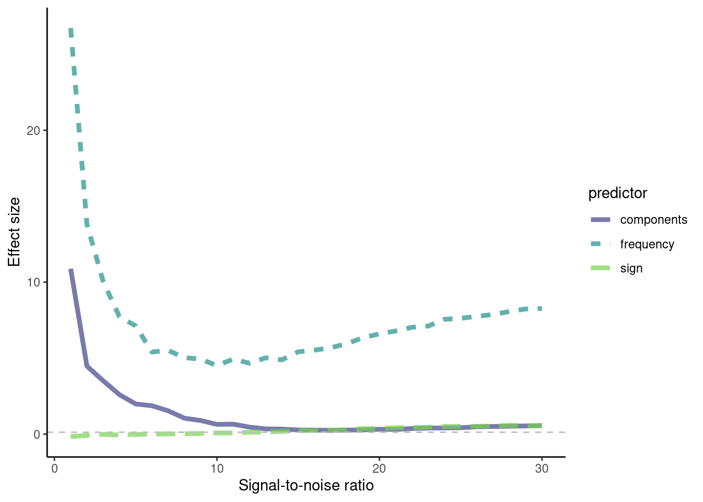
4.0.5.1 Only sign
Code
ggplot(estimates[estimates$predictor == "sign", ], aes(y = coef, x = model,
color = predictor, lty = predictor)) + geom_line(linewidth = 1.6) +
geom_smooth(method = "lm") + labs(x = "Signal-to-noise ratio",
y = "Effect size") + scale_color_viridis_d(alpha = 0.7, begin = 0.2,
end = 0.8) + geom_hline(yintercept = mean(coef_by_signif[, 2][1,
1], coef_by_signif[, 2][2, 2]), lty = 2, color = "gray") + theme_classic()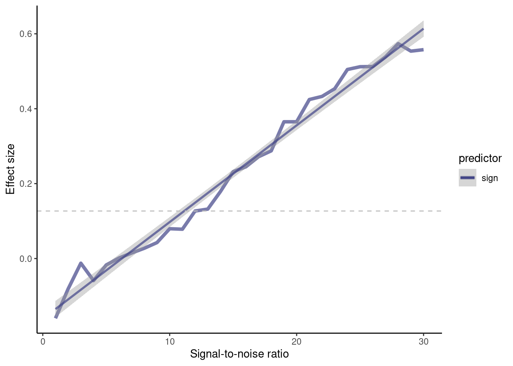
Effect size becomes non-significant at SNR = 11.14
Effect size crosses 0 at SNR = 6.23
4.0.5.2 By frequency
Code
dtw_dists_snr_list <- readRDS(file.path(data_path, "dtw_distance_schroeders_degradation_experiment_varying_snr_start_segment.RDS"))
dtw_wv_mod_list <- warbleR:::pblapply_wrblr_int(dtw_dists_snr_list,
cl = 1, function(y) {
# print(y$target.snr[1])
freqs <- unique(substr(y[, 1], 0, 6))
mods <- lapply(1:length(freqs), function(i) {
# extract only those with the same freq
x <- y[grepl(paste(freqs[i], collapse = "|"), y$schr1) &
grepl(paste(freqs[i], collapse = "|"), y$schr2), ]
target_snr <- x$target.snr
x$target.snr <- NULL
dist_tri <- PhenotypeSpace::rectangular_to_triangular(x)
if (nrow(dist_tri) > 2) {
comp_bi_tri <- as.dist(binary_triangular_matrix(group = gsub("_n|_p",
"", sapply(strsplit(rownames(dist_tri), "_"), "[[",
2))))
sign_bi_tri <- as.dist(binary_triangular_matrix(group = sapply(strsplit(rownames(dist_tri),
"_"), "[[", 3)))
rect_var <- cbind(as.dist(dist_tri), comp_bi_tri,
sign_bi_tri)
colnames(rect_var) <- c("dtw_dist", "components",
"sign")
dtw_wv_mod <- MRM2(formula = dtw_dist ~ components +
sign, nperm = 10000, mat = rect_var)
} else dtw_wv_mod <- NULL
return(dtw_wv_mod)
})
names(mods) <- paste0("snr:", y$target.snr[1], "_", freqs)
mods <- mods[!sapply(mods, is.null)]
return(mods)
})
saveRDS(dtw_wv_mod_list, file.path(data_path, "matrix_correlation_dtw_distance_varying_snr_by_frequency_start_segment.RDS"))Discriminating Schroeder’s by sign grouped by frequency:
Code
mods <- readRDS("./data/processed/matrix_correlation_dtw_distance_varying_snr_by_frequency_start_segment.RDS")
estimates_list <- lapply(seq_along(mods), function(z) {
y <- mods[[z]]
estimates <- do.call(rbind, lapply(seq_along(y), function(x) {
Y <- data.frame(y[[x]]$coef[-1, ])
# Y$rel_coef <- Y[, 1] / max(Y[, 1])
Y$rel_coef <- Y[, 1]
Y$mod <- names(y)[x]
Y$predictor <- rownames(Y)
Y$freq <- strsplit(names(y)[x], "_")[[1]][2]
Y$freq <- strsplit(Y$freq, ":")[[1]][2]
names(Y) <- c("coef", "p", "rel_coef", "model", "predictor",
"freq")
Y$snr <- names(mods)[z]
return(Y)
}))
estimates$rel_coef <- ifelse(estimates$p < 0.05, estimates$rel_coef,
0)
estimates$signif <- ifelse(estimates$p < 0.05, "p < 0.05", "p >= 0.05")
return(estimates)
})
estimates <- do.call(rbind, estimates_list)
estimates$snr <- as.numeric(estimates$snr)
rownames(estimates) <- 1:nrow(estimates)
coef_by_signif <- aggregate(coef ~ signif, data = estimates[estimates$predictor ==
"sign", ], FUN = range)
ggplot(estimates[estimates$predictor == "sign", ], aes(y = coef, x = snr,
color = freq)) + geom_line(linewidth = 1.6) + labs(x = "Signal-to-noise ratio",
y = "Effect size when discriminating sign", color = "F0\nfrequency") +
scale_color_viridis_d(alpha = 0.7, begin = 0.2, end = 0.8) + theme_classic()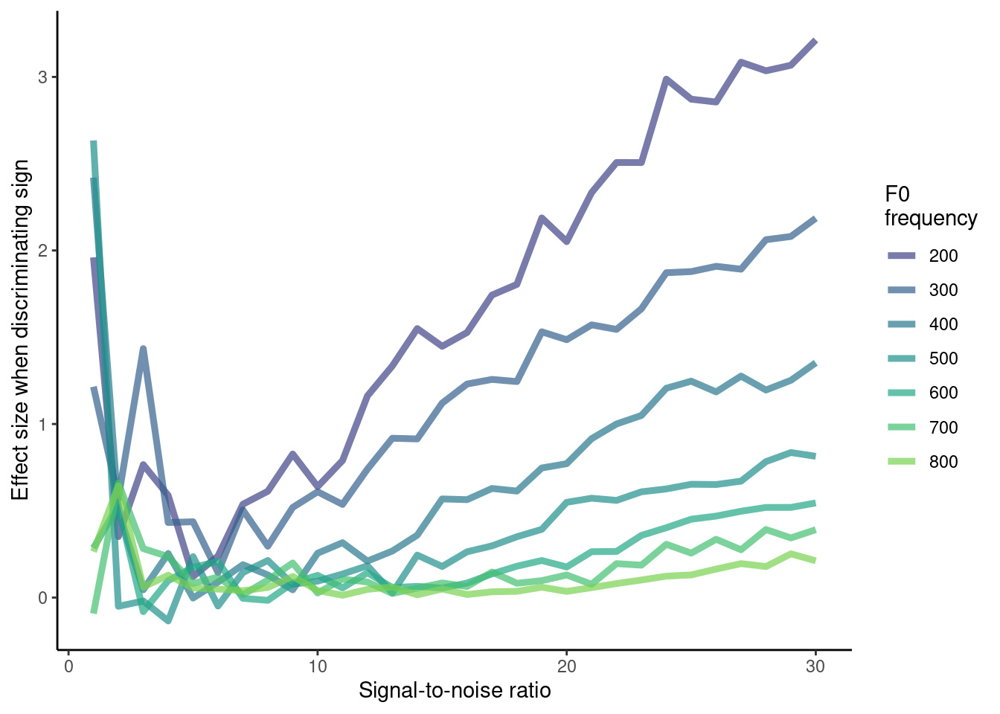
Discriminating Schroeder’s by number of components grouped by frequency:
Code
coef_by_signif <- aggregate(coef ~ signif, data = estimates[estimates$predictor ==
"components", ], FUN = range)
ggplot(estimates[estimates$predictor == "components", ], aes(y = coef,
x = snr, color = freq)) + geom_line(linewidth = 1.6) + labs(x = "Signal-to-noise ratio",
y = "Effect size when discriminating number of components", color = "F0\nfrequency") +
scale_color_viridis_d(alpha = 0.7, begin = 0.2, end = 0.8) + geom_hline(yintercept = mean(coef_by_signif[,
2][1, 1], coef_by_signif[, 2][2, 2]), lty = 2, color = "gray") +
theme_classic()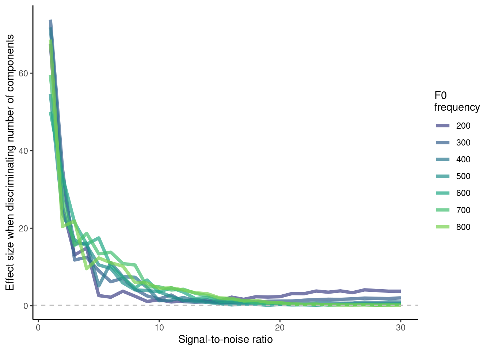
4.0.5.3 By component
Code
dtw_dists_snr_list <- readRDS(file.path(data_path, "dtw_distance_schroeders_degradation_experiment_varying_snr_start_segment.RDS"))
dtw_wv_mod_list <- warbleR:::pblapply_wrblr_int(dtw_dists_snr_list,
cl = 1, function(y) {
# print(y$target.snr[1])
comps <- unique(sapply(strsplit(y[, 1], "_"), "[[", 2))
mods <- lapply(1:length(comps), function(i) {
# extract only those with the same freq
x <- y[grepl(paste(comps[i], collapse = "|"), y$schr1) &
grepl(paste(comps[i], collapse = "|"), y$schr2), ]
target_snr <- x$target.snr
x$target.snr <- NULL
dist_tri <- PhenotypeSpace::rectangular_to_triangular(x)
if (nrow(dist_tri) > 2) {
freq_bi_tri <- as.dist(binary_triangular_matrix(group = sapply(strsplit(rownames(dist_tri),
"_"), "[[", 1)))
sign_bi_tri <- as.dist(binary_triangular_matrix(group = sapply(strsplit(rownames(dist_tri),
"_"), "[[", 3)))
rect_var <- cbind(as.dist(dist_tri), freq_bi_tri,
sign_bi_tri)
colnames(rect_var) <- c("dtw_dist", "frequency", "sign")
dtw_wv_mod <- MRM2(formula = dtw_dist ~ components +
sign, nperm = 10000, mat = rect_var)
} else dtw_wv_mod <- NULL
return(dtw_wv_mod)
})
names(mods) <- paste0("snr:", y$target.snr[1], "_", comps)
mods <- mods[!sapply(mods, is.null)]
return(mods)
})
saveRDS(dtw_wv_mod_list, "./data/processed/matrix_correlation_dtw_distance_varying_snr_by_components_start_segment.RDS")Discriminating Schroeder’s by sign grouped by number of components:
Code
mods <- readRDS("./data/processed/matrix_correlation_dtw_distance_varying_snr_by_components_start_segment.RDS")
estimates_list <- lapply(seq_along(mods), function(z) {
y <- mods[[z]]
estimates <- do.call(rbind, lapply(seq_along(y), function(x) {
Y <- data.frame(y[[x]]$coef[-1, ])
# Y$rel_coef <- Y[, 1] / max(Y[, 1])
Y$rel_coef <- Y[, 1]
Y$mod <- names(y)[x]
Y$predictor <- rownames(Y)
Y$comps <- strsplit(names(y)[x], "_")[[1]][2]
Y$comps <- strsplit(Y$comps, ":")[[1]][2]
names(Y) <- c("coef", "p", "rel_coef", "model", "predictor",
"comps")
Y$snr <- names(mods)[z]
return(Y)
}))
estimates$rel_coef <- ifelse(estimates$p < 0.05, estimates$rel_coef,
0)
estimates$signif <- ifelse(estimates$p < 0.05, "p < 0.05", "p >= 0.05")
return(estimates)
})
estimates <- do.call(rbind, estimates_list)
estimates$snr <- as.numeric(estimates$snr)
estimates$comps <- factor(estimates$comps, levels = unique(as.numeric(estimates$comps)))
rownames(estimates) <- 1:nrow(estimates)
coef_by_signif <- aggregate(coef ~ signif, data = estimates[estimates$predictor ==
"sign", ], FUN = range)
ggplot(estimates[estimates$predictor == "sign", ], aes(y = coef, x = snr,
color = comps)) + geom_line(linewidth = 1.6) + labs(x = "Signal-to-noise ratio",
y = "Effect size when discriminating sign", color = "Components") +
scale_color_viridis_d(alpha = 0.7, begin = 0.2, end = 0.8) + # geom_hline(yintercept = mean(coef_by_signif[,2][1, 1], coef_by_signif[,2][2, 2]), lty = 2, color = 'gray') + scale_color_viridis_d(alpha
scale_color_viridis_d(alpha = 0.7, begin = 0.2, end = 0.8) + # geom_hline(yintercept = mean(coef_by_signif[,2][1, 1], coef_by_signif[,2][2, 2]), lty = 2, color = 'gray') + =
scale_color_viridis_d(alpha = 0.7, begin = 0.2, end = 0.8) + # geom_hline(yintercept = mean(coef_by_signif[,2][1, 1], coef_by_signif[,2][2, 2]), lty = 2, color = 'gray') + 0.7,
scale_color_viridis_d(alpha = 0.7, begin = 0.2, end = 0.8) + # geom_hline(yintercept = mean(coef_by_signif[,2][1, 1], coef_by_signif[,2][2, 2]), lty = 2, color = 'gray') + begin
scale_color_viridis_d(alpha = 0.7, begin = 0.2, end = 0.8) + # geom_hline(yintercept = mean(coef_by_signif[,2][1, 1], coef_by_signif[,2][2, 2]), lty = 2, color = 'gray') + =
scale_color_viridis_d(alpha = 0.7, begin = 0.2, end = 0.8) + # geom_hline(yintercept = mean(coef_by_signif[,2][1, 1], coef_by_signif[,2][2, 2]), lty = 2, color = 'gray') + 0.2,
scale_color_viridis_d(alpha = 0.7, begin = 0.2, end = 0.8) + # geom_hline(yintercept = mean(coef_by_signif[,2][1, 1], coef_by_signif[,2][2, 2]), lty = 2, color = 'gray') + end
scale_color_viridis_d(alpha = 0.7, begin = 0.2, end = 0.8) + # geom_hline(yintercept = mean(coef_by_signif[,2][1, 1], coef_by_signif[,2][2, 2]), lty = 2, color = 'gray') + =
scale_color_viridis_d(alpha = 0.7, begin = 0.2, end = 0.8) + # geom_hline(yintercept = mean(coef_by_signif[,2][1, 1], coef_by_signif[,2][2, 2]), lty = 2, color = 'gray') + 0.8)
scale_color_viridis_d(alpha = 0.7, begin = 0.2, end = 0.8) + # geom_hline(yintercept = mean(coef_by_signif[,2][1, 1], coef_by_signif[,2][2, 2]), lty = 2, color = 'gray') + +
scale_color_viridis_d(alpha = 0.7, begin = 0.2, end = 0.8) + # geom_hline(yintercept = mean(coef_by_signif[,2][1, 1], coef_by_signif[,2][2, 2]), lty = 2, color = 'gray') + #
scale_color_viridis_d(alpha = 0.7, begin = 0.2, end = 0.8) + # geom_hline(yintercept = mean(coef_by_signif[,2][1, 1], coef_by_signif[,2][2, 2]), lty = 2, color = 'gray') + geom_hline(yintercept
scale_color_viridis_d(alpha = 0.7, begin = 0.2, end = 0.8) + # geom_hline(yintercept = mean(coef_by_signif[,2][1, 1], coef_by_signif[,2][2, 2]), lty = 2, color = 'gray') + =
scale_color_viridis_d(alpha = 0.7, begin = 0.2, end = 0.8) + # geom_hline(yintercept = mean(coef_by_signif[,2][1, 1], coef_by_signif[,2][2, 2]), lty = 2, color = 'gray') + mean(coef_by_signif[,2][1,
scale_color_viridis_d(alpha = 0.7, begin = 0.2, end = 0.8) + # geom_hline(yintercept = mean(coef_by_signif[,2][1, 1], coef_by_signif[,2][2, 2]), lty = 2, color = 'gray') + 1],
scale_color_viridis_d(alpha = 0.7, begin = 0.2, end = 0.8) + # geom_hline(yintercept = mean(coef_by_signif[,2][1, 1], coef_by_signif[,2][2, 2]), lty = 2, color = 'gray') + coef_by_signif[,2][2,
scale_color_viridis_d(alpha = 0.7, begin = 0.2, end = 0.8) + # geom_hline(yintercept = mean(coef_by_signif[,2][1, 1], coef_by_signif[,2][2, 2]), lty = 2, color = 'gray') + 2]),
scale_color_viridis_d(alpha = 0.7, begin = 0.2, end = 0.8) + # geom_hline(yintercept = mean(coef_by_signif[,2][1, 1], coef_by_signif[,2][2, 2]), lty = 2, color = 'gray') + lty
scale_color_viridis_d(alpha = 0.7, begin = 0.2, end = 0.8) + # geom_hline(yintercept = mean(coef_by_signif[,2][1, 1], coef_by_signif[,2][2, 2]), lty = 2, color = 'gray') + =
scale_color_viridis_d(alpha = 0.7, begin = 0.2, end = 0.8) + # geom_hline(yintercept = mean(coef_by_signif[,2][1, 1], coef_by_signif[,2][2, 2]), lty = 2, color = 'gray') + 2,
scale_color_viridis_d(alpha = 0.7, begin = 0.2, end = 0.8) + # geom_hline(yintercept = mean(coef_by_signif[,2][1, 1], coef_by_signif[,2][2, 2]), lty = 2, color = 'gray') + color
scale_color_viridis_d(alpha = 0.7, begin = 0.2, end = 0.8) + # geom_hline(yintercept = mean(coef_by_signif[,2][1, 1], coef_by_signif[,2][2, 2]), lty = 2, color = 'gray') + =
scale_color_viridis_d(alpha = 0.7, begin = 0.2, end = 0.8) + # geom_hline(yintercept = mean(coef_by_signif[,2][1, 1], coef_by_signif[,2][2, 2]), lty = 2, color = 'gray') + 'gray')
scale_color_viridis_d(alpha = 0.7, begin = 0.2, end = 0.8) + # geom_hline(yintercept = mean(coef_by_signif[,2][1, 1], coef_by_signif[,2][2, 2]), lty = 2, color = 'gray') + +
theme_classic()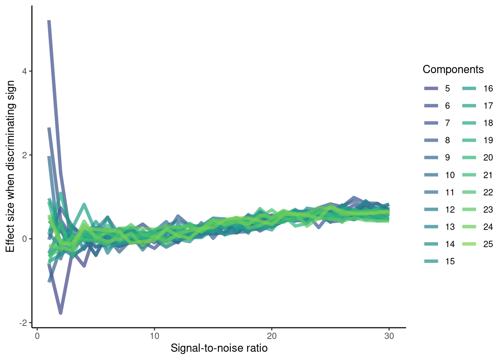
Discriminating Schroeder’s by frequency grouped by number of components:
Code
ggplot(estimates[estimates$predictor == "frequency", ], aes(y = coef,
x = snr, color = comps)) + geom_line(linewidth = 1.6) + labs(x = "Signal-to-noise ratio",
y = "Effect size when discriminating frequency", color = "Components") +
scale_color_viridis_d(alpha = 0.7, begin = 0.2, end = 0.8) + theme_classic()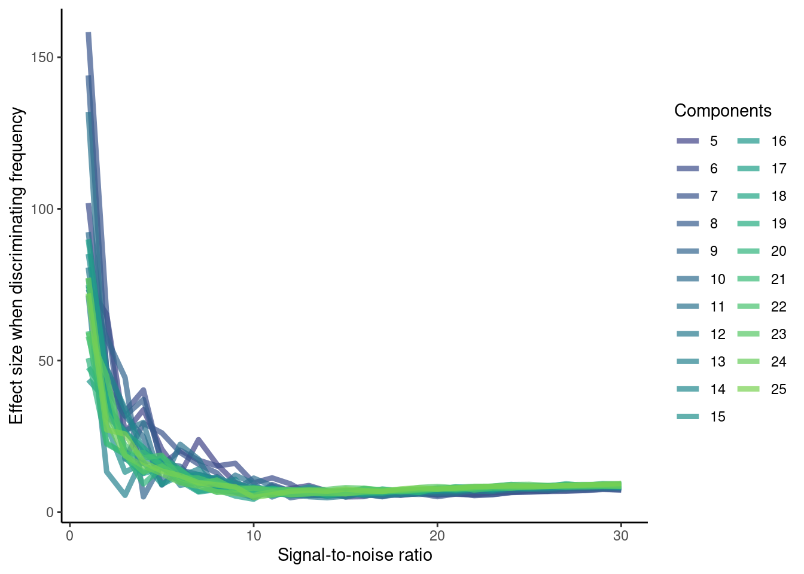
Code
## Estimate active distance
snrs <- 1:30
ambient_spl <- 10
SPL_signal <- ambient_spl + snrs
SPL_signal
# Constants SPL1 <- 40 # Constant SPL of the noise (in dB) SPL2
# <- 80 # The SPL you want to calculate (in dB)
distance1 <- 1 # The initial distance (in meters)
# Calculate distance2
distance2 <- sqrt(10^((ambient_spl - SPL_signal)/20)) * distance1
plot(distance2, SPL_signal)
snrs <- SPL_signal - ambient_spl
text(snrs, x = distance2, y = SPL_signal + 1)5 Takeaways
- Sign is not detectable in degraded signals from playback experiment
- The way Schroeder structure is infer affects the amount of info that can be accurately obtained
- Schroeders sign undetectable below SNR = 11
Session information
R version 4.3.1 (2023-06-16)
Platform: x86_64-pc-linux-gnu (64-bit)
Running under: Ubuntu 20.04.2 LTS
Matrix products: default
BLAS: /usr/lib/x86_64-linux-gnu/atlas/libblas.so.3.10.3
LAPACK: /usr/lib/x86_64-linux-gnu/atlas/liblapack.so.3.10.3; LAPACK version 3.9.0
locale:
[1] LC_CTYPE=pt_BR.UTF-8 LC_NUMERIC=C
[3] LC_TIME=es_CR.UTF-8 LC_COLLATE=pt_BR.UTF-8
[5] LC_MONETARY=es_CR.UTF-8 LC_MESSAGES=pt_BR.UTF-8
[7] LC_PAPER=es_CR.UTF-8 LC_NAME=C
[9] LC_ADDRESS=C LC_TELEPHONE=C
[11] LC_MEASUREMENT=es_CR.UTF-8 LC_IDENTIFICATION=C
time zone: America/Costa_Rica
tzcode source: system (glibc)
attached base packages:
[1] stats graphics grDevices utils datasets methods base
other attached packages:
[1] numform_0.7.0 ecodist_2.1.3 PhenotypeSpace_0.1.0
[4] ggplot2_3.4.4 baRulho_2.1.0 ohun_1.0.0
[7] Rraven_1.0.14 viridis_0.6.4 viridisLite_0.4.2
[10] warbleR_1.1.29 NatureSounds_1.0.4 tuneR_1.4.5
[13] seewave_2.2.3 formatR_1.14 knitr_1.45
[16] kableExtra_1.3.4
loaded via a namespace (and not attached):
[1] DBI_1.1.3 bitops_1.0-7 rgeos_0.6-4
[4] deldir_1.0-9 pbapply_1.7-2 gridExtra_2.3
[7] remotes_2.4.2.1 permute_0.9-7 testthat_3.2.0
[10] rlang_1.1.2 magrittr_2.0.3 e1071_1.7-13
[13] compiler_4.3.1 spatstat.geom_3.2-7 mgcv_1.9-0
[16] png_0.1-8 systemfonts_1.0.5 vctrs_0.6.4
[19] Sim.DiffProc_4.8 rvest_1.0.3 stringr_1.5.0
[22] pkgconfig_2.0.3 crayon_1.5.2 fastmap_1.1.1
[25] backports_1.4.1 labeling_0.4.3 utf8_1.2.4
[28] rmarkdown_2.25 xfun_0.41 jsonlite_1.8.7
[31] goftest_1.2-3 spatstat.utils_3.0-4 terra_1.7-55
[34] Deriv_4.1.3 cluster_2.1.4 parallel_4.3.1
[37] R6_2.5.1 stringi_1.7.12 spatstat.data_3.0-3
[40] rpart_4.1.21 brio_1.1.3 Rcpp_1.0.11
[43] tensor_1.5 splines_4.3.1 Matrix_1.6-2
[46] igraph_1.5.1 tidyselect_1.2.0 rstudioapi_0.15.0
[49] abind_1.4-5 yaml_2.3.7 vegan_2.6-4
[52] dtw_1.23-1 codetools_0.2-19 spatstat.random_3.2-1
[55] lattice_0.22-5 tibble_3.2.1 withr_2.5.2
[58] evaluate_0.23 signal_0.7-7 sf_1.0-14
[61] sketchy_1.0.2 units_0.8-4 proxy_0.4-27
[64] polyclip_1.10-6 xml2_1.3.5 pillar_1.9.0
[67] packrat_0.9.2 KernSmooth_2.23-22 checkmate_2.3.0
[70] generics_0.1.3 sp_2.1-1 RCurl_1.98-1.13
[73] munsell_0.5.0 scales_1.2.1 class_7.3-22
[76] glue_1.6.2 tools_4.3.1 xaringanExtra_0.7.0
[79] webshot_0.5.5 grid_4.3.1 colorspace_2.1-0
[82] nlme_3.1-163 raster_3.6-26 cli_3.6.1
[85] spatstat.sparse_3.0-3 fansi_1.0.5 svglite_2.1.2
[88] dplyr_1.1.3 gtable_0.3.4 spatstat.core_2.4-4
[91] fftw_1.0-7 digest_0.6.33 classInt_0.4-10
[94] farver_2.1.1 rjson_0.2.21 htmlwidgets_1.6.2
[97] htmltools_0.5.7 lifecycle_1.0.4 httr_1.4.7
[100] MASS_7.3-60